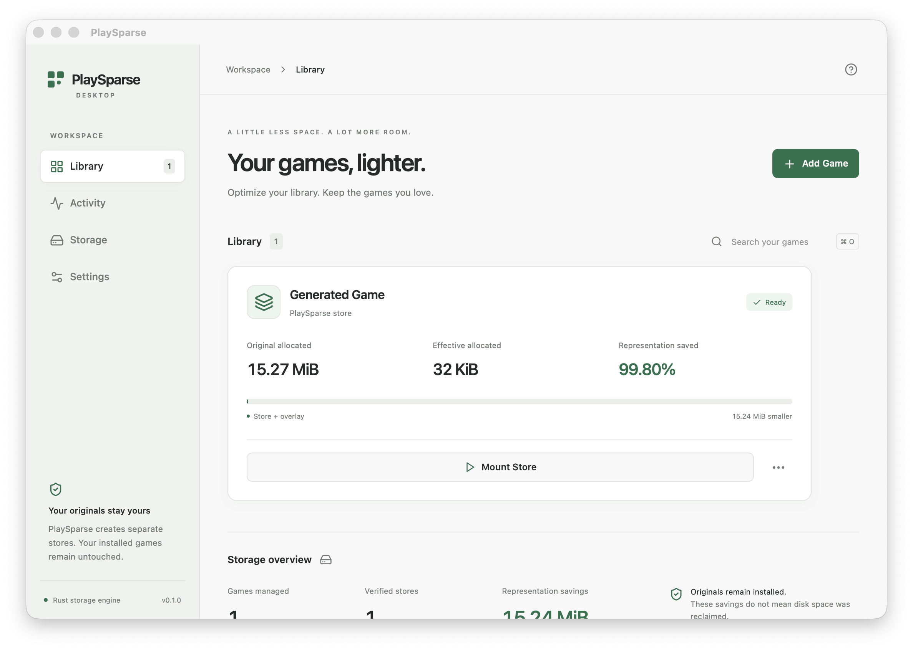
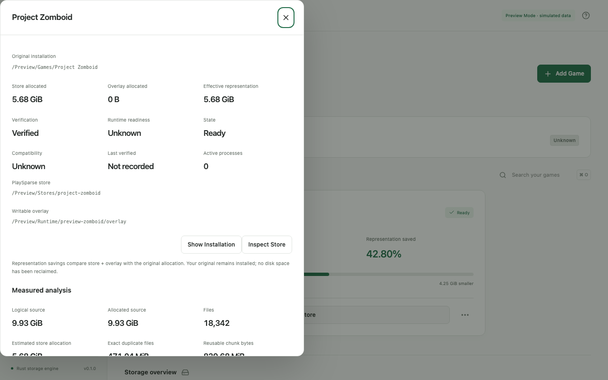

Measure installation files and build source-preserving verified stores.
Systems research / Rust & Tauri
PlaySparse
Store less. Serve the same files.
A research-driven approach to large installations: chunked, verified storage and virtual filesystem access behind an accessible desktop experience.
STATUS / EXPERIMENTALPUBLIC SHOWCASE / SOURCE EXCLUDEDDOCUMENTED, NOT A COMMERCIAL RELEASE
Built to be seen.
Not oversold.
01 / Product
What it does.
02 / CapabilitiesUse content-addressed chunks, caches and platform-specific virtual mount integration.
Explore launch and runtime compatibility with explicit validation gates.
Inside the experience.
03 / Details
Evidence and limitations
This is experimental research with platform-specific constraints. No arbitrary 10× compression guarantee: already-compressed files often compress poorly. Original installs remain on disk, so representation savings are not automatically reclaimed free space. Driver, launcher, DRM and anti-cheat compatibility must be evaluated for each workload. Current build artifacts are development artifacts.
This is a portfolio demonstration, not a source-code release, license offer or promise of an immediately available paid download. Previously issued MIT licenses remain valid for already published source versions.
Independent engineering / scoped collaboration
Have a related problem worth solving?
Describe your target platform, constraints, acceptance criteria, and timeframe. I'll discuss feasibility, scope, commercial terms and whether a custom implementation makes sense. Please do not include private credentials or customer data in your first email.